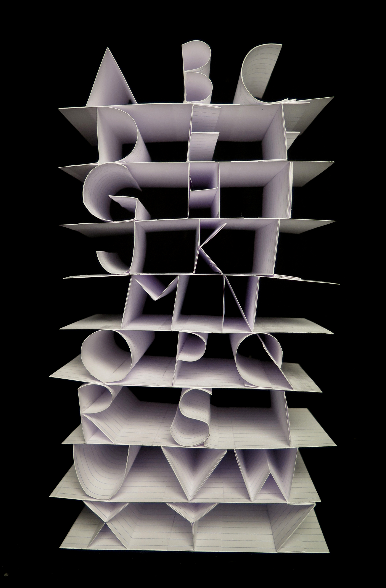

Overview
Nina Flores and I collaborated to create a typeface made of 3x5 notecards. We experimented with many ways to convey the uniqueness of the material, eventually deciding to focus on the sturdy, yet still flexible nature of the notecards to create the typeface we called "Study Guide."
Finding the Essence of Notecards
We played around with our given material a lot, making numerous cuts and folds to see how the trademark lines could intersect with one another to create letterforms. While initially we were interested in using the lines to make letters, we soon switched to exploring how the structure of the card itself could make letterforms. The sturdiness and stackable nature of notecards was the main inspiration behind "Study Guide."

